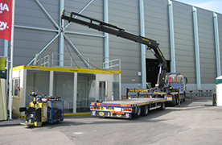

01 · Dienst
Autolaadkranen
Boekweit Transport beschikt over een breed aanbod mobiele kranen van 20 tot 100 ton, met gieklengtes tot 23 meter. Alle kranen zijn voorzien van radiografische afstandsbediening en worden ingezet vanaf aanhanger, bakwagen, losse trekker of vlakke oplegger — ideaal voor zware en volumineuze ladingen op moeilijk bereikbare locaties zoals bouwplaatsen en binnensteden.
- Hijsvermogen van 20 tot 100 ton
- Divers hulpmateriaal voor uiteenlopende hijsklussen
- Van schaftketen en bouwunits tot transformatoren en zonnepanelen